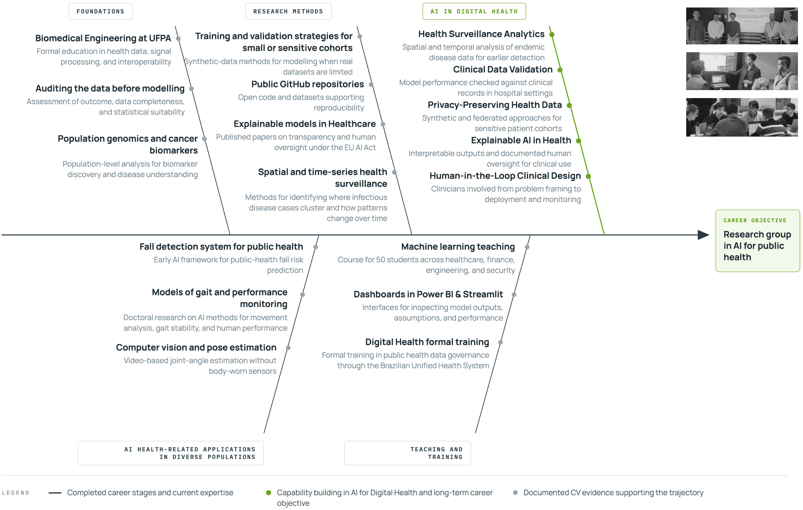

Background
About me
I studied Biomedical Engineering at the Universidade Federal do Pará before pursuing a PhD at the Technological University of the Shannon, where I worked on AI for human performance. My focus has always been the same: how machine learning interacts with the way the body works.
My work sits at the intersection of machine learning, generative AI, performance monitoring, and computer vision, mostly in digital health. I’m especially interested in methods that hold up in real-world conditions: messy data, human-in-the-loop decisions, and real constraints.
I work in English and Portuguese, and I can follow conversations in Spanish.
One of the pillars I believe in
Reality-centric AIReality-centric AI starts where some teams refuse to: the data. Before any model is trained, someone needs to ask whether the variables are consistently recorded, whether the outcome being predicted is clearly defined, and whether a simpler statistical approach would already answer the question.
Most clinical AI failures are not due to algorithmic issues. They are infrastructural. A neural network trained on noisy, inconsistently labeled data does not fail loudly. It produces outputs that look right, get trusted, and reach clinicians who have no reason to question them.
Building a model with clearly specified assumptions and honest accounting of what the data is missing is not a warm-up act. It is the step that tells you whether AI is justified at all. At the end of every output, there is a clinician who decides, and a patient who lives with it.
Career fishbone
How the stages connect